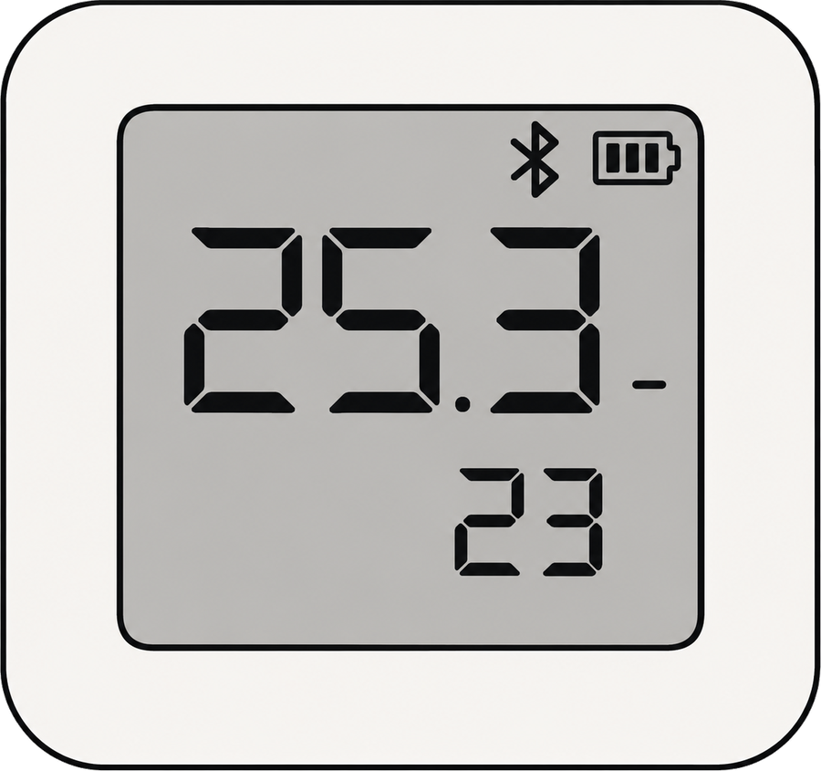
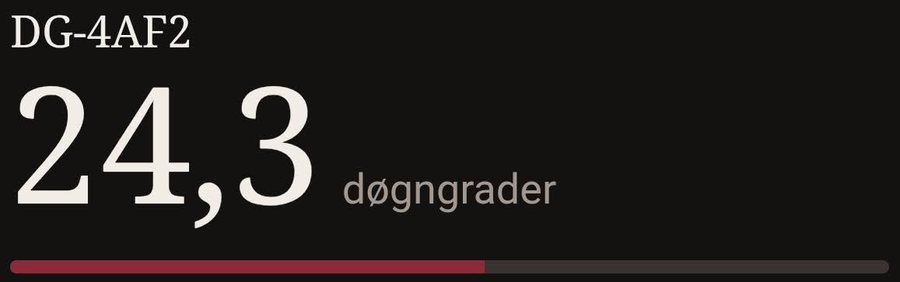
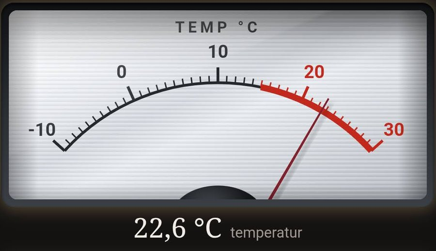
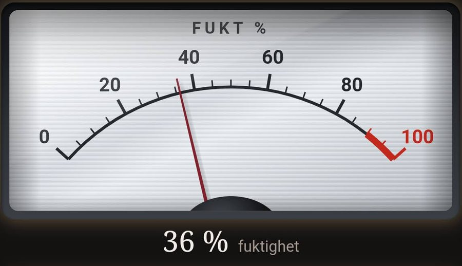
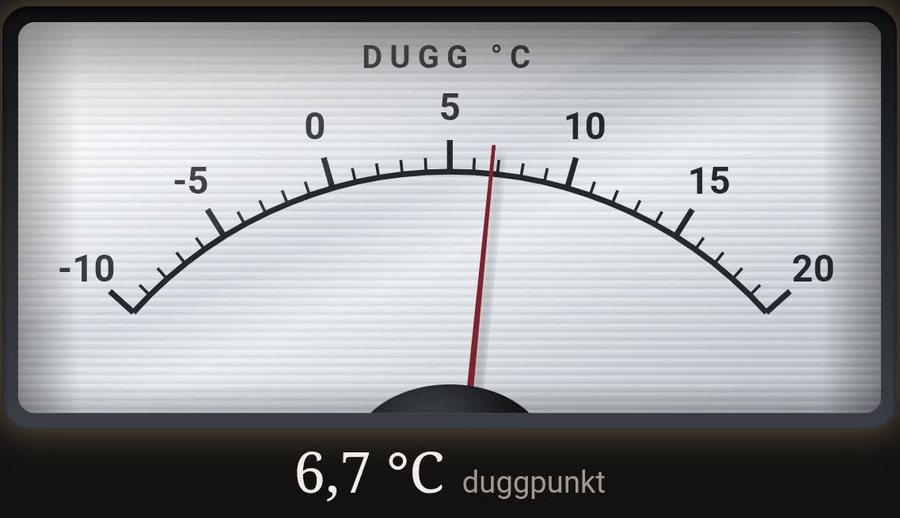
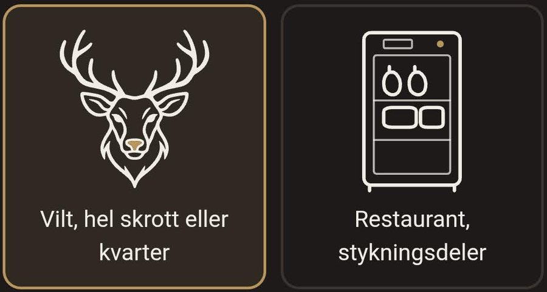
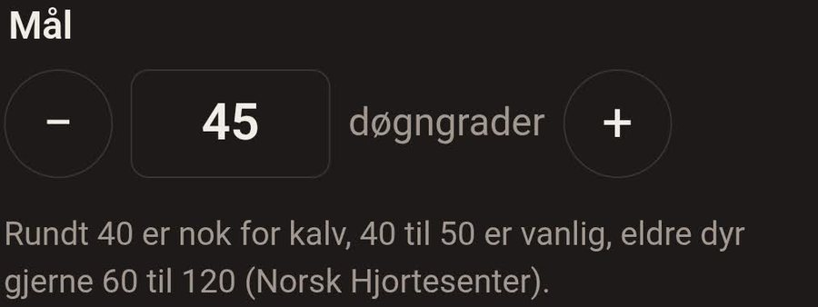
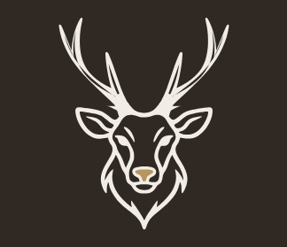
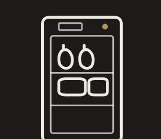

Måler for modning av kjøtt
Modne henger ved kjøttet og teller modningen hele tiden, i døgngrader eller dager. Svaret står rett på skjermen. Ingen app, ingen konto, ingen dekning nødvendig.

Kjøtt modnes raskere når det er varmere. Derfor teller jegere døgngrader: døgnets middeltemperatur lagt sammen, døgn for døgn.
Fem døgn på 4 °C gir 20 døgngrader. Fem døgn på 8 °C gir 40. Like mange dager, dobbelt så mye modning.
Når dyret henger ute, svinger temperaturen fra time til time. Modne måler hele tiden og legger sammen for deg, så du slipper å regne og gjette.
Veiledende mål for hjortevilt fra Norsk Hjortesenter: rundt 40 for kalv, 40 til 50 er vanlig, eldre dyr gjerne 60 til 120.
til 45 døgngrader ved jevn 4,0 °C
Forenklet med jevn temperatur. I virkeligheten svinger den, og derfor teller måleren hele tiden.
Heng måleren ved kjøttet og les av. Alt du trenger for å vite når kjøttet er klart, vises i displayet.
Åpne modne.no/app i nettleseren og koble til måleren over Bluetooth. Ingenting å laste ned, ingen konto.

Døgngradene står stort øverst, og stolpen under viser hvor nær målet du er. Appen regner også ut omtrent når målet nås, ut fra temperaturen så langt.



Tre analoge instrumenter viser forholdene rundt kjøttet akkurat nå. Fuktighet og duggpunkt sier om overflaten tørker som den skal, eller om det er fare for kondens.

Velg hvordan måleren skal telle. For vilt teller den døgngrader. For restaurant teller den dager, slik det er vanlig ved tørrmodning, eller døgngrader om du heller vil det.

Målet settes i appen og lagres i måleren, uten å åpne den. Slår du på smilefjeset, tennes det i displayet når målet er nådd. Da ser du det i forbifarten, uten mobil.


Displayet, tellingen og ny periode virker uten app og uten abonnement.
Abonnementet gjelder appen: graf, fuktighet, anslag med værvarsel, historikk og innstillinger fra mobilen. Du kan prøve appen gratis i fem dager per måler, eller se demoen uten måler.
Nei. Temperatur under 0 °C gir ingen døgngrader, fordi frossent kjøtt ikke modnes. Tellingen fortsetter når det blir varmere.
Nei. Svaret står i displayet. Appen er for den som vil se graf, fuktighet, anslag og historikk.
Appen bruker Bluetooth i nettleseren. Det virker i Chrome, Edge og Vivaldi på Android og PC.
På iPhone og iPad har ingen av de vanlige nettleserne Bluetooth fra nettsider, heller ikke Chrome og Edge. Med iOS 26 eller nyere løses det med den gratis appen beacio fra App Store: den legger Bluetooth til i Safari. Slå på utvidelsen under Innstillinger, Apper, Safari, Utvidelser, og åpne appen i Safari. På eldre iPhone kan nettleseren Bluefy brukes.
Måleren selv virker alltid uten app, også for deg med iPhone.
Et vanlig CR2032 knappcellebatteri. Batteriet følger med, og nye får du kjøpt i de aller fleste dagligvarebutikker.
Hver måler har en kode på fire tegn, for eksempel 4AF2. Koden står bak på måleren når du får den, og den vises i appen. Samme kode kan stå på merkelappen på kjøttstykket.
Faste priser. Foretaket er ikke mva-registrert, så prisene er endelige.